¿Sabias que...? 👀
Los terceros molares o "muelas del juicio" como son conocidas comúnmente pueden crear un desajuste en la armonía de la arcada provocando qué los demás dientes se muevan y creen una maloclusion.
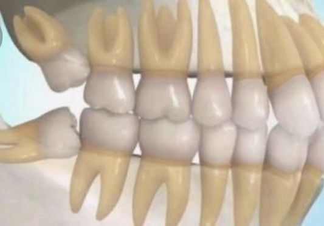Los terceros molares o "muelas del juicio" como son conocidas comúnmente pueden crear un desajuste en la armonía de la arcada provocando qué los demás dientes se muevan y creen una maloclusion.
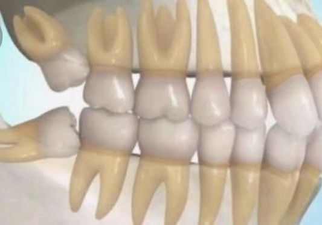La pérdida de dientes también contribuye a la creación de maloclusiones. 😱
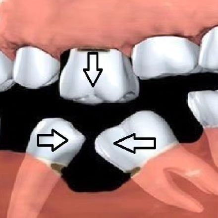En la antigüedad, nuestros ancestros utilizaban "alambres" de oro para recolocar dientes perdidos y así no se viera afectada la función de la masticación y oclusión. Te dejamos la evolución de dicha maniobra. 😁
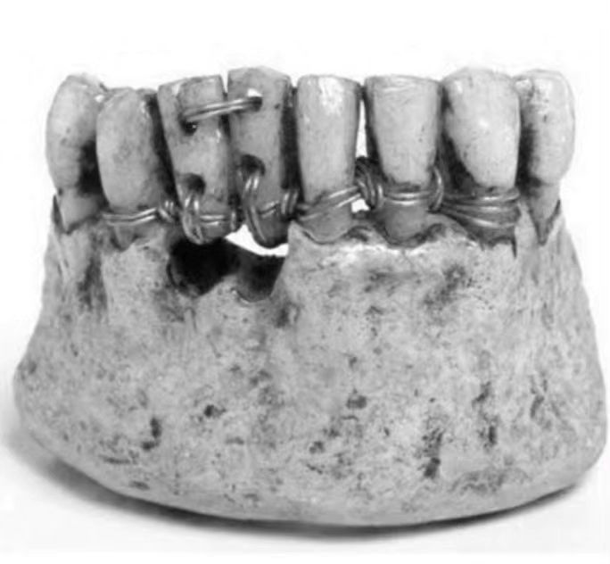Las carillas dentales mejoran únicamente el aspecto de los dientes, pero no restablecen la funcionalidad de la boca. Puede resolver malposiciones leves y espacios entre dientes, además de que son capaces de modificar la apariencia de la pieza tanto en forma como en color.
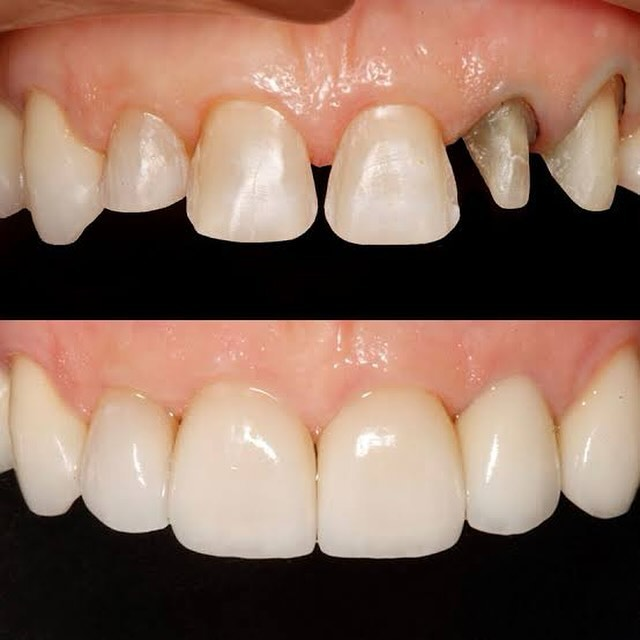Les dejamos un meme para que la chaviza le entienda al equipo de ocludent👍🏻
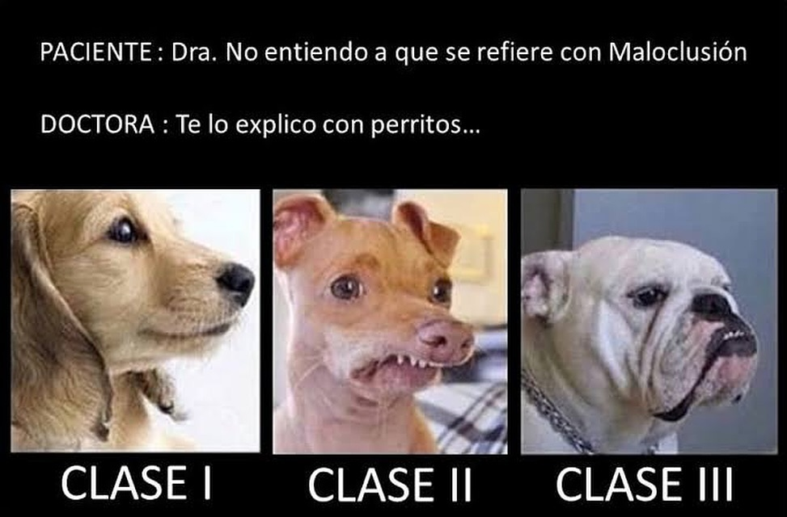Una maloclusión puede causar sobrecarga, desgaste anormal y dolor en la articulación temporomandibular (ATM), contribuyendo así al desarrollo de trastornos temporomandibulares (DTM).
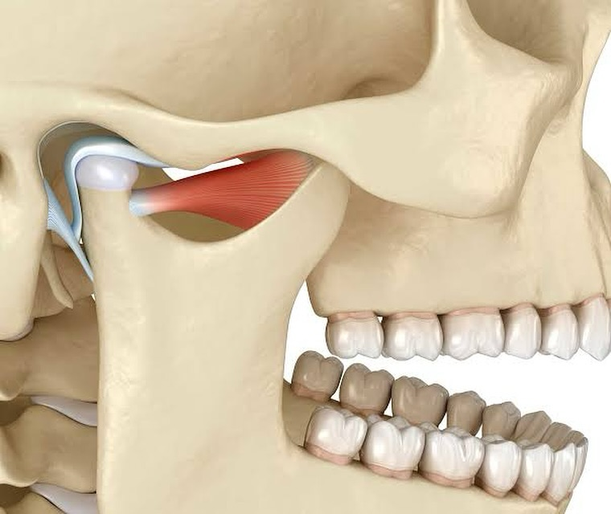La endodoncia con la oclusión dental? Así es, ya que la endodoncia puede alterar la altura y la alineación de los dientes, lo que a su vez puede afectar la oclusión dental y la mordida del paciente. Se pueden requerir restauraciones dentales y ajustes para corregir estos cambios y mantener una oclusión adecuada.
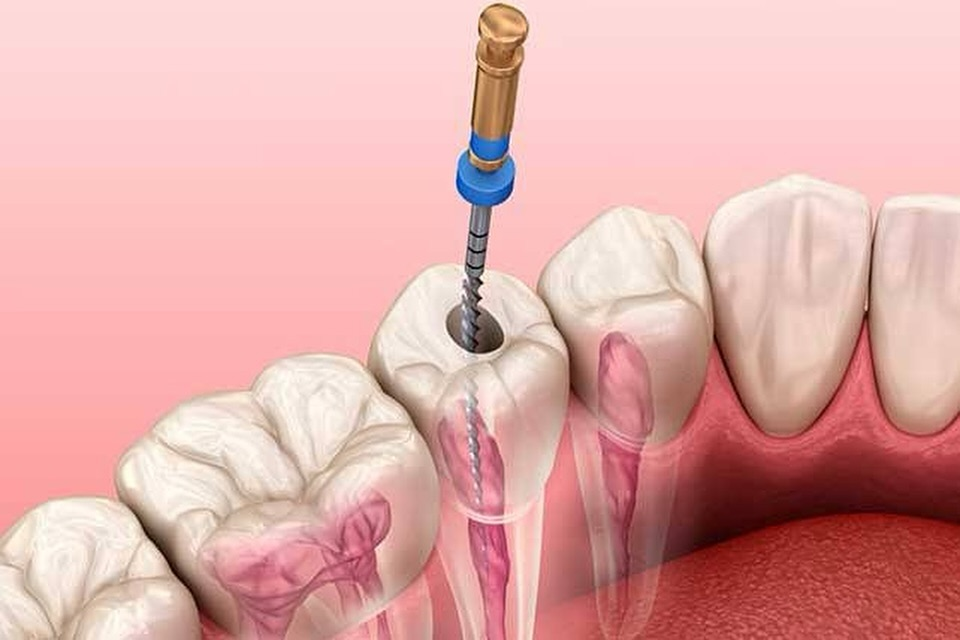Permitir que los niños se chupen el dedo o usen chupete después de los 3 años puede causar problemas en el desarrollo de la mandíbula y los dientes. Esto puede provocar maloclusiones, como mordida abierta, mordida cruzada o protrusión dental.
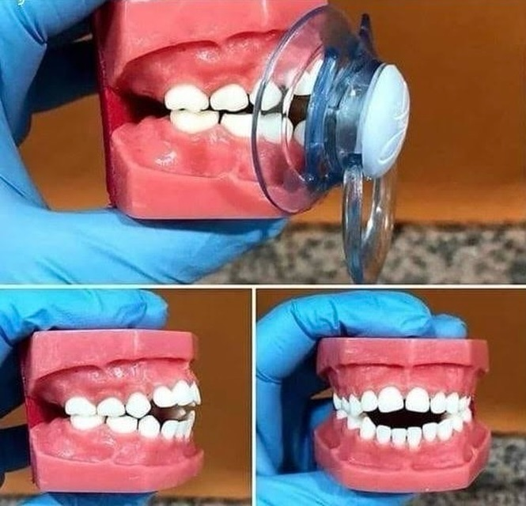Las cirugías maxilofaciales pueden ser necesarias para corregir problemas de oclusión dental, como maloclusiones, mordida abierta, mordida cruzada, entre otros. Algunos ejemplos de procedimientos incluyen la ortognática, la osteotomía mandibular y la cirugía de paladar.
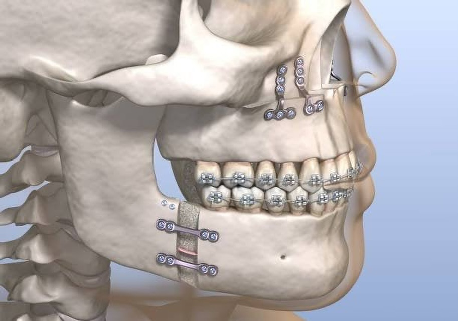Garantiza una sonrisa bonita de la mano de tu dentista, para nosotros es un placer ayudarte. ❤️
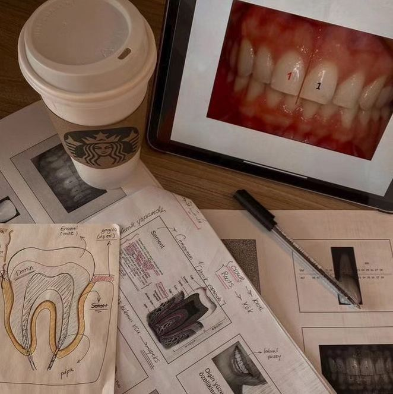Ochoa, E, D., Núñez, M,A., Armas, A., Cevallos, F., López, E (2019) Oclusion en niños con dentición mixta, estudio de patrón facial y tipo de oclusion
https://www.scielo.sa.cr/scielo.php?script=sci_arttext&pid=S1659-07752019000100015
Ramírez, L.M, Ballesteros, L.E (2012) Oclusión Dental: ¿Doctrina Mecanicista o Lógica Morfofisiológica?
https://www.scielo.cl/scielo.php?script=sci_arttext&pid=S0718-381X2012000200015
La ortodoncia es la rama de la odontología que se encarga de los
problemas de los dientes y la mandíbula.
La atención
dental con ortodoncia incluye el uso de dispositivos, tales como los
aparatos para:
Es un movimiento de trabajo desde la oclusión céntrica, en que todos o algunos de los dientes anteriores y posteriores mandibulares y maxilares en el lado de trabajo permanecen en contacto.

La Guía incisiva es el deslizamiento en protrusiva de los bordes incisales de los incisivos inferiores desde sus contactos en céntrica a lo largo de las caras palatinas de los incisivos superiores, hasta llegar a vis a vis. Se acompaña por la desoclusión de los dientes posteriores.
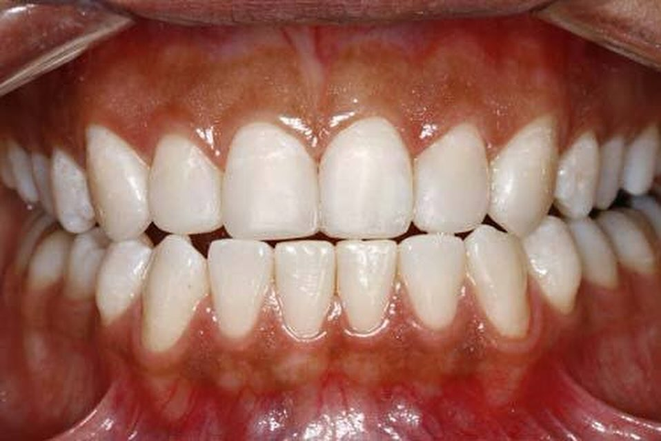La guía canina resulta en una lateralidad de trabajo, con el contacto de la cúspide del canino inferior con el canino superior, produciendo una separación del sector posterior de lado de trabajo y del lado de no trabajo.
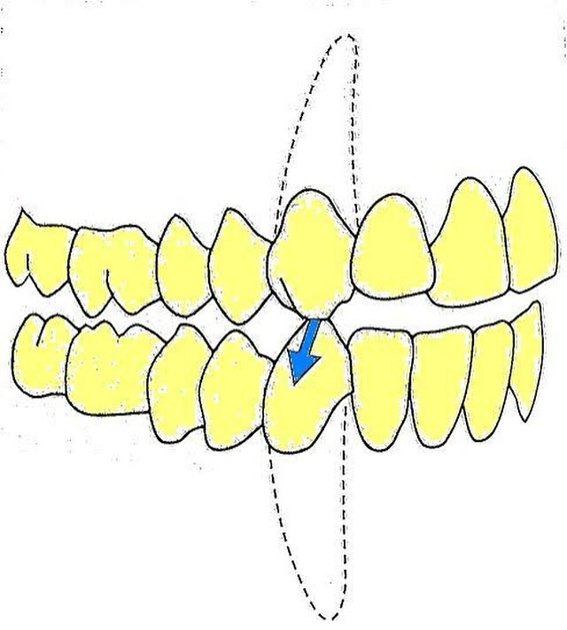Se le conoce como sobremordida horizontal y está presente cuando los bordes incisales de los dientes anteriores superiores sobrepasan horizontalmente sobre los dientes anteriores inferiores. Dictada por las inclinaciones desoclusivas de los cóndilos (eminencia articular) y deberá proporcionar una superficie palatina desoclusiva para los dientes anteriores inferiores, que estará en armonía con el movimiento mandibular.
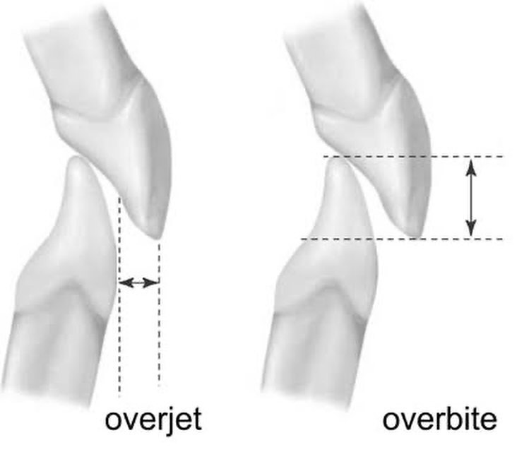La mordida vertical o llamada mordida profunda está presente cuando los bordes incisales de los dientes anteriores superiores sobrepasan verticalmente a los bordes incisales de los dientes anteriores inferiores. Dictada por la altura de las cúspides y la profundidad de las fosas de los dientes posteriores y la inclinación de la eminencia articular, un tercero puede ser el plano oclusal.
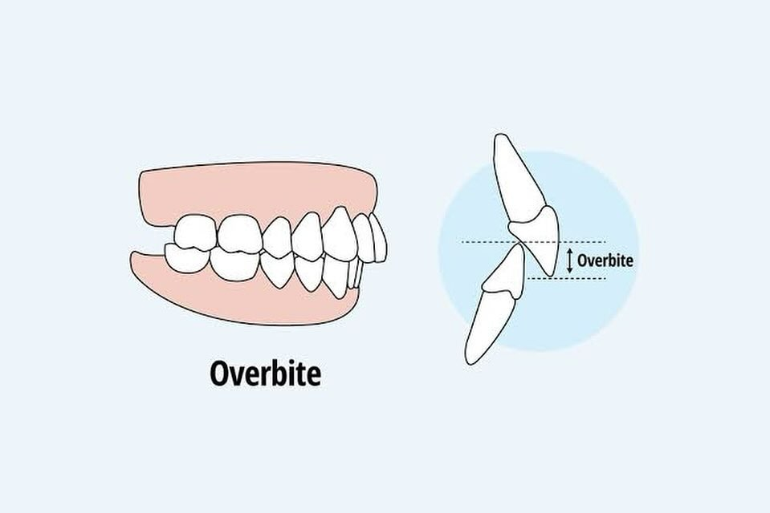La maloclusión a menudo está relacionada con problemas respiratorios, como la respiración oral. Esto puede resultar en una postura de cabeza adelantada y una posición de lengua baja, lo que afecta la alineación de la cabeza y la columna vertebral.
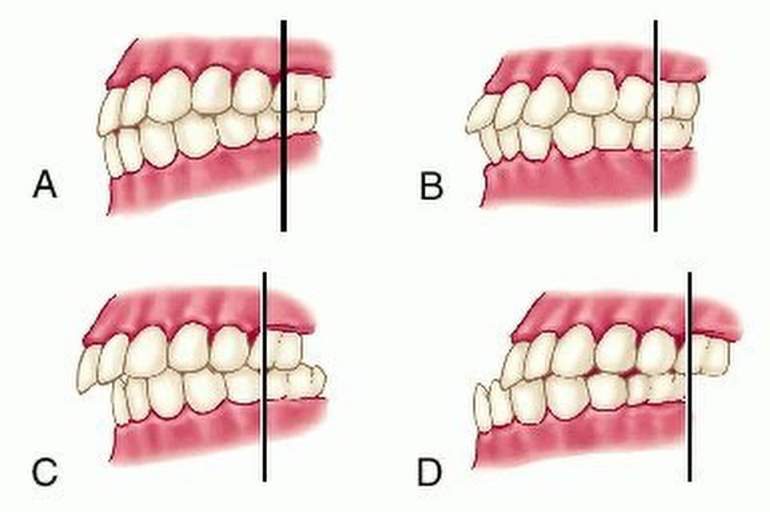La mandíbula y la columna vertebral están conectadas a través de músculos y tejidos conectivos. Una maloclusión puede causar tensión en estos músculos y afectar la alineación de la mandíbula, lo que a su vez puede influir en la postura del cuello y la espalda.
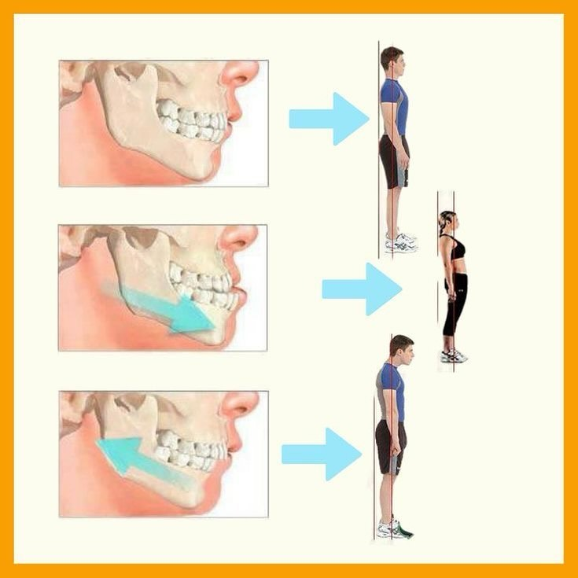El equipo de ocludent les desea un bello día y una sonrisa hermosa.
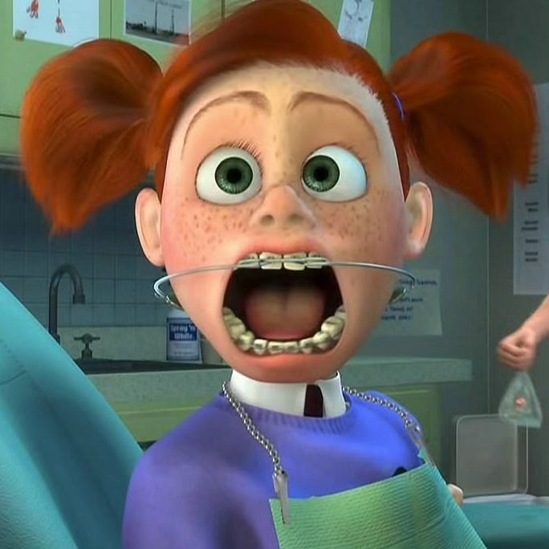El espacio y el intercambio de dientes es importante para obtener una buena oclusión dental.
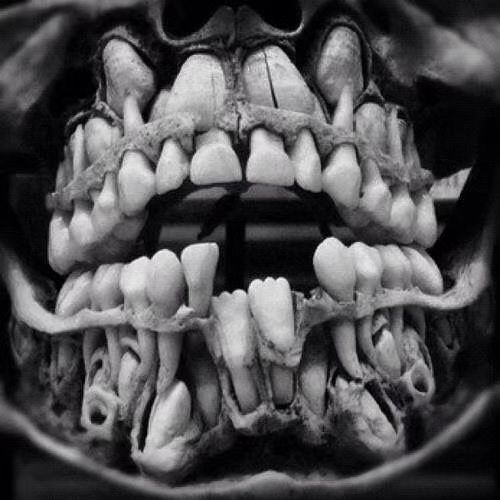El apiñamiento dental o la aparición de dientes torcidos es una maloclusión debida a una falta de espacio en uno o ambos maxilares😦🦷

¿Sabias que el articulador semi ajustable es un artefacto que nos permite ver la relación de los dientes de manera extra bucal? 🤔😁
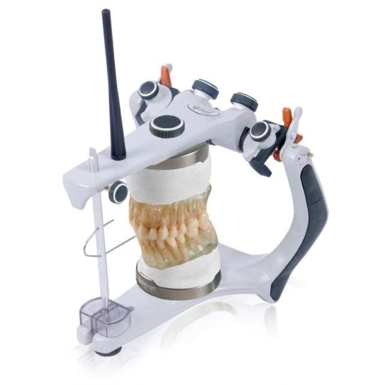
Se refiere a cualquier alteración en el crecimiento óseo de la mandíbula o del maxilar así como en la posición de los dientes que impide el correcto funcionamiento del aparato masticatorio.
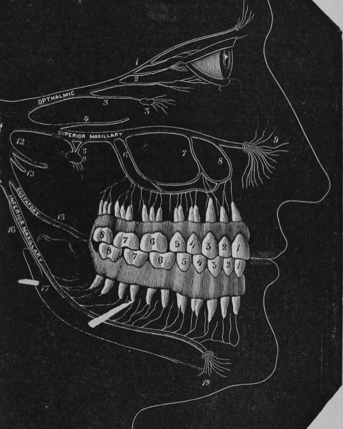La mal oclusión dental nos afecta en multitud de funciones; como es la masticación, habla o inclusive la estética de nuestro rostro. Por eso es importante darle un correcto abordaje desde temprana fase.
Es el alineamiento de los dientes y la forma como se ajustan los dientes superiores e inferiores (mordida). 😁
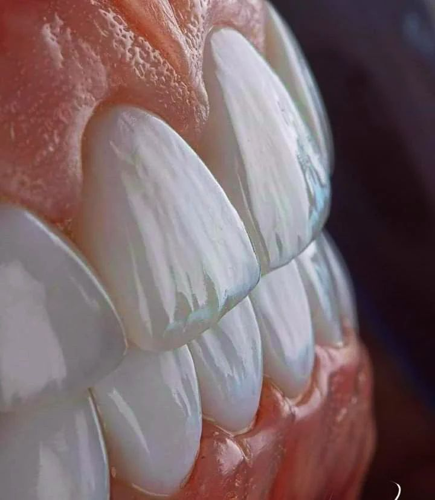
Somos una página creada para informar a todo el público sobre salud
bucodental.
¡SÍGUENOS! ✨